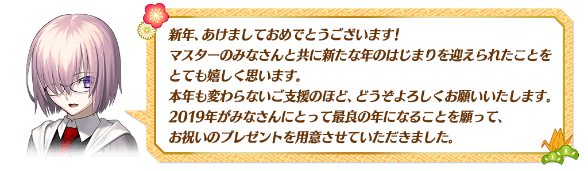
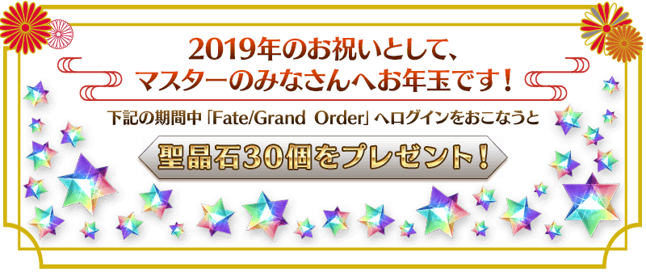
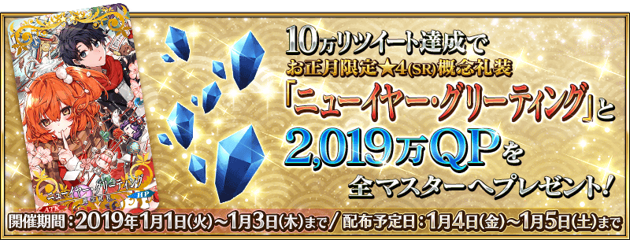
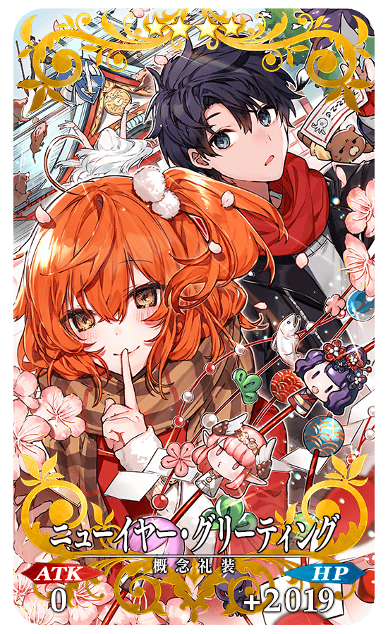
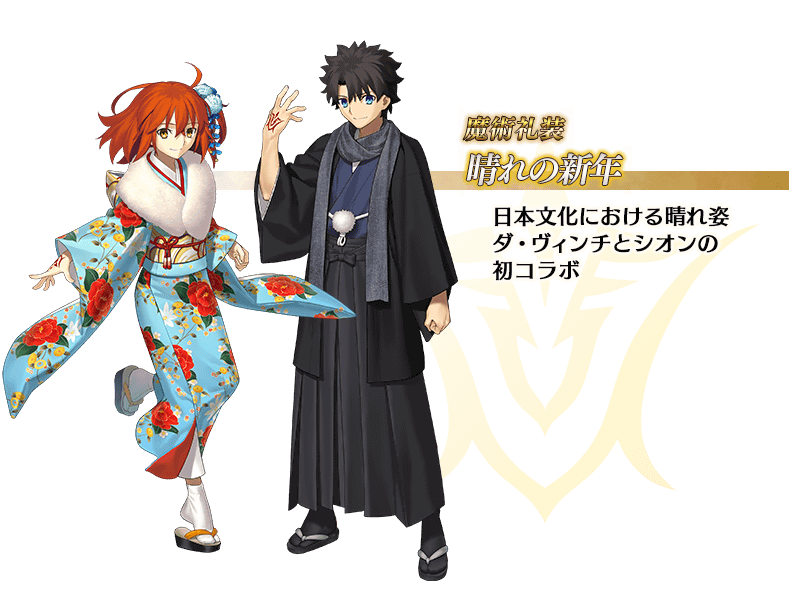
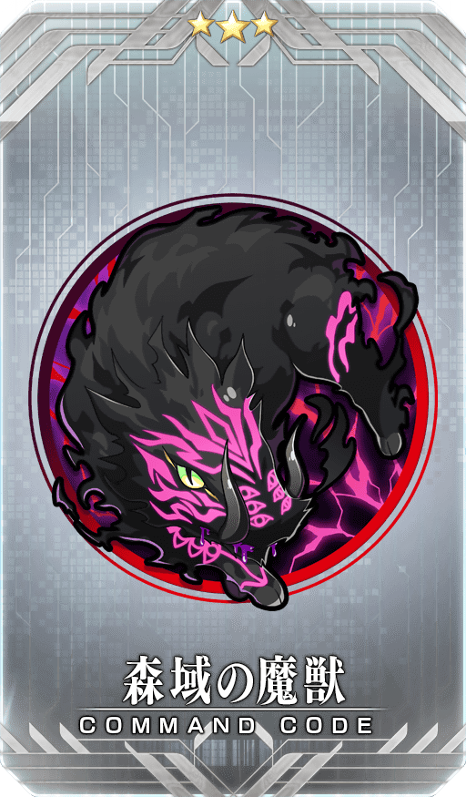
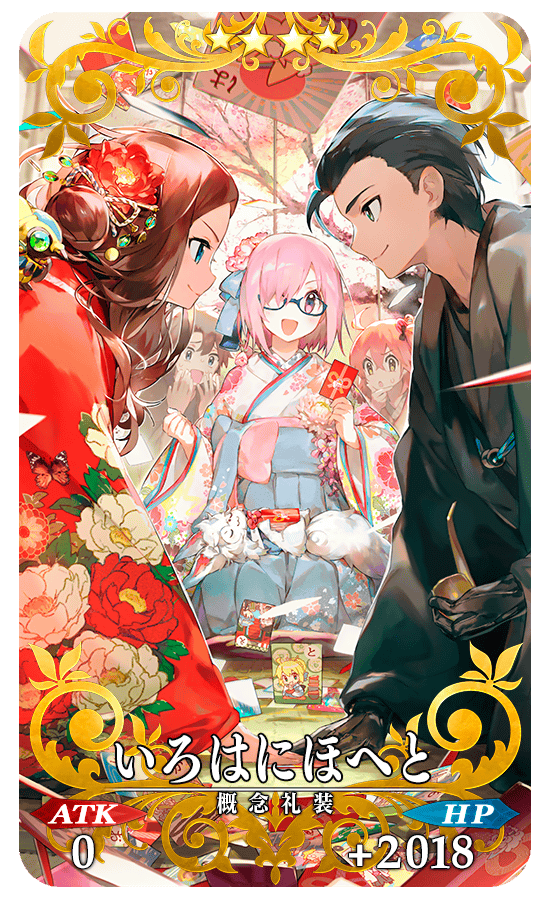

◆舉辦期間◆ 2018年12月31日(一) 23:00～2019年1月10日(四) 11:59

◆領取期間◆
2019年1月1日(二) AM3:00～1月4日(五) AM2:59
上述的期間中，在初次進行登入到「Fate/Grand Order」的時間點，贈送至禮物箱。
◆贈送內容◆ 聖晶石 30個
◆贈送對象◆
所有Master對象
※新Master必須通過至「特異點F 炎上汙染都市 冬木 第3節」。
※期間內未登入的話無法領取。
※禮物只能領取1次。
為了記念「2019年新年宣傳活動」的舉辦，今年也實施新年三天限定的特別登入獎勵！
◆舉辦期間◆
2019年1月1日(二) AM3:00～1月4日(五) AM2:59
◆贈送對象◆
所有Master對象
※新Master必須通過至「特異點F 炎上汙染都市 冬木 第3節」。
| 登入時間 | 贈送內容 |
|---|---|
| 1月1日(二) AM3:00～ 1月2日(三) AM2:59 |
黃金果實 19個 |
| 1月2日(三) AM3:00～ 1月3日(四) AM2:59 |
英靈結晶・太陽之芙芙ALL★3(ATK) 19張 |
| 1月3日(四) AM3:00～ 1月4日(五) AM2:59 |
英靈結晶・星之芙芙ALL★3(HP) 19張 |
※請注意各登入時間的期間內未登入的話無法領取。 ※禮物各只能領取1次。

在官方推特上方固定顯示的「2019年新年宣傳活動舉辦！」推特的轉推數，在下述期間內達成10萬轉推的話，向遊玩遊戲的所有Master贈送「★4(SR)ニューイヤー・グリーティング」與2,019萬QP！
「Fate/Grand Order」官方推特:@fgoproject
◆舉辦期間◆
2019年1月1日(二) 在官方推特上的推特刊載後～1月3日(四) 22:59
◆配布預定日◆
2019年1月4日(五) AM3:00～1月5日(六) AM2:59的期間中，在初次進行登入到「Fate/Grand Order」的時間點，贈送至禮物箱。
◆プレゼント對象◆
所有Master對象
※在舉辦期間內達成10萬轉推的情況，新Master必須在配布預定最終日的1月5日(六) AM2:59前通過至「特異點F 炎上汙染都市 冬木 第3節」。
| 達成目標(轉推數) | 達成報酬 |
|---|---|
| 10萬轉推 | ★4(SR)ニューイヤー・グリーティング 2,019萬QP |
※在舉辦期間內未達到達成目標的轉推數的話，無法領取達成報酬。 ※期間內未登入的話無法達成報酬。
◆新年限定概念禮裝◆
|  |
★★★★SR |
「2019年新年宣傳活動」限定的新魔術禮裝「晴れの新年」登場！
舉辦期間中，通過在迦勒底之門內出現的「魔術礼装クエスト・晴れの新年」的話，可入手新魔術禮裝「晴れの新年」。
務必得到期間限定的貴重魔術禮裝吧！
◆舉辦期間◆
2018年12月31日(一) 23:00～2019年1月10日(四) 11:59
◆參加條件◆
只限通過「特異點F 炎上汙染都市 冬木」的Master才能參加

※請注意在晴れの新年獲得關卡沒有文字冒險部份。
下述的期間中，在「Master任務」的「限定」標籤內以期間限定追加「【2019年新年宣傳活動】」。
通過所有任務的話，可得到指令紋章「★3(R)森域の魔獣」與豪華報酬！
◆舉辦期間◆
2018年12月31日(一) 23:00～2019年1月10日(四) 11:59
◆領取期間◆
2018年12月31日(一) 23:00～2019年1月17日(四) 11:59
◆2019年新年宣傳活動指令紋章◆
|  |
★★★R |
◆追加任務◆
| 任務名稱 | 任務達成報酬 |
|---|---|
|
【2019年新年宣傳活動】
擊倒『豬型』的敵人3名 |
概念禮裝經驗值卡★4(SR)猪王 1張 Saber銀像 1個 Saber金棋 1個 |
|
【2019年新年宣傳活動】
擊倒『和風』的Servant或人類的敵人3名 |
概念禮裝經驗值卡★4(SR)猪王 1張 Archer銀像 1個 Archer金棋 1個 |
|
【2019年新年宣傳活動】
靠戰利品收集『金色』的道具1個 |
概念禮裝經驗值卡★4(SR)猪王 1張 Lancer銀像 1個 Lancer金棋 1個 |
|
【2019年新年宣傳活動】
擊倒持有『神性』特性的Servant3位 |
概念禮裝經驗值卡★4(SR)猪王 1張 Rider銀像 1個 Rider金棋 1個 |
|
【2019年新年宣傳活動】
擊倒持有『善』屬性的Servant3位 |
概念禮裝經驗值卡★4(SR)猪王 1張 Caster銀像 1個 Caster金棋 1個 |
|
【2019年新年宣傳活動】
靠戰利品收集『球』的道具1個 |
概念禮裝經驗值卡★4(SR)猪王 1張 Assassin銀像 1個 Assassin金棋 1個 |
|
【2019年新年宣傳活動】
通過『山』的自由關卡3次 |
概念禮裝經驗值卡★4(SR)猪王 1張 Berserker銀像 1個 Berserker金棋 1個 |
|
【2019年新年宣傳活動】
通過全部的任務 |
★3(R)森域の魔獣 1枚 |
※請注意舉辦期間與領取期間有所差異。 ※請注意與每週日23:00更新的普通任務(Weekly)不同欄位，超過領取期間過的話無法入手報酬。 ※就算通過「【2019年新年宣傳活動】任務」也不會計算在普通任務(Weekly)的任務進行度。
◆得到新年限定概念禮裝EXP卡「猪王」吧！◆
做為「2019年新年宣傳活動」限定的報酬，可入手能大幅強化概念禮裝大幅的EXP卡！
無論如何請藉此機會，強化中意的概念禮裝！
在進行Servant及概念禮裝的強化時，大成功(經驗值2倍加成)・極大成功(經驗值3倍加成)發生機率以期間限定變成2倍！
無論如何藉此機會強化中意的Servant和概念禮裝吧！
◆舉辦期間◆
2018年12月31日(一) 23:00～2019年1月10日(四) 11:59
對從現在開始遊戲的玩家，增量新手起跑衝刺宣傳活動的登入獎勵報酬！
從第1天到第14天的報酬以期間限定變成2倍！
在舉辦期間中登入14天的話，最多給予聖晶石召喚104次份的聖晶石與呼符、對Servant的育成有用的叡智的猛火ALL★4(SR)172張！
還有其他許多在遊戲有用的豪華道具！
別錯過比以往還實惠的這個期間！
◆舉辦期間◆
2018年12月31日(一) 23:00～2019年1月17日(四) 22:59
◆領取方法◆
■其1.通過關卡
通過「特異點F 炎上汙染都市 冬木 第3節」聖晶石2個，另外通過「特異點F 炎上汙染都市 冬木」聖晶石10個！
可得到合計12個(聖晶石召喚4次份)！
■其2.登入獎勵
從開始遊戲，在舉辦期間中登入14天的話得到以下的道具！
【登入獎勵合計】
・聖晶石 192個(聖晶石召喚64次份)
・呼符 40張(聖晶石召喚40次份)
・友情點數 合計56,000pt(友情點數召喚280次份)
・叡智的猛火 ALL★4(SR) 172張
・黃金果實 64個
・400萬QP
| 登入天數 | 入手登入獎勵 |
|---|---|
| 第1天 |
聖晶石 2個 友情點數 4,000pt 叡智的猛火 ALL★4(SR) 2張 黃金果實 2個 |
| 第2天 |
聖晶石 4個 友情點數 4,000pt 叡智的猛火 ALL★4(SR) 2張 黃金果實 2個 |
| 第3天 |
聖晶石 6個 友情點數 4,000pt 叡智的猛火 ALL★4(SR) 2張 黃金果實 2個 |
| 第4天 |
聖晶石 10個 友情點數 4,000pt 叡智的猛火 ALL★4(SR) 2張 黃金果實 2個 |
| 第5天 |
聖晶石 14個 友情點數 4,000pt 叡智的猛火 ALL★4(SR) 2張 黃金果實 2個 |
| 第6天 |
聖晶石 20個 友情點數 4,000pt 叡智的猛火 ALL★4(SR) 2張 黃金果實 2個 |
| 第7天 |
聖晶石 40個 友情點數 4,000pt 200萬QP 叡智的猛火 ALL★4(SR) 20張 黃金果實 20個 呼符 20張 |
| 第8天 |
聖晶石 6個 友情點數 4,000pt 叡智的猛火 ALL★4(SR) 20張 黃金果實 2個 |
| 第9天 |
聖晶石 6個 友情點數 4,000pt 叡智的猛火 ALL★4(SR) 20張 黃金果實 2個 |
| 第10天 |
聖晶石 6個 友情點數 4,000pt 叡智的猛火 ALL★4(SR) 20張 黃金果實 2個 |
| 第11天 |
聖晶石 6個 友情點數 4,000pt 叡智的猛火 ALL★4(SR) 20張 黃金果實 2個 |
| 第12天 |
聖晶石 6個 友情點數 4,000pt 叡智的猛火 ALL★4(SR) 20張 黃金果實 2個 |
| 第13天 |
聖晶石 6個 友情點數 4,000pt 叡智的猛火 ALL★4(SR) 20張 黃金果實 2個 |
| 第14天 |
聖晶石 60個 友情點數 4,000pt 200萬QP 叡智的猛火 ALL★4(SR) 20張 黃金果實 20個 呼符 20張 |
以期間限定在達文西工房的「魔力稜鏡交換」追加下述的道具。
本次特別追加可在「稀有稜鏡交換」入手的道具「Code・Remover」！
◆道具交換期間◆
2018年12月31日(一) 23:00～2019年1月10日(四) 11:59
| 追加道具 | 能交換 次數 |
1次交換所需的 魔力稜鏡數 |
|---|---|---|
| 【2019年新年限定】壓歲錢福袋2019 | 1次 | 19個 |
| 【2019年新年限定】概念禮裝EXP卡★4(SR)猪王 | 10次 | 20個 |
| 【2019年新年限定】Quick・Code・Opener | 3次 | 50個 |
| 【2019年新年限定】Arts・Code・Opener | 3次 | 50個 |
| 【2019年新年限定】Buster・Code・Opener | 3次 | 50個 |
| 【2019年新年限定】Code・Remover | 3次 | 100個 |
| 【2019年新年限定】呼符 | 10次 | 10個 |
| 【2019年新年限定】叡智的猛火ALL★4(SR)10張組 | 10次 | 20個 |
| 【2019年新年限定】英靈結晶・星之芙芙ALL★3(HP) | 30次 | 5個 |
| 【2019年新年限定】英靈結晶・太陽之芙芙ALL★3(ATK) | 30次 | 5個 |
◆壓歲錢福袋2019◆
在達文西工房的「魔力稜鏡交換」可以期間限定交換的「壓歲錢福袋2019」，包含以下的道具。
可開放絆等級上限的道具「カルデアの夢火」和可大幅強化概念禮裝的新年限定EXP卡也登場！
・カルデアの夢火 1個
・概念禮裝EXP卡★4(SR)猪王 1張
・1,000萬QP
・友情點數 10,000pt
※迦勒底的夢火、QP、友情點數直接賦予至持有道具。
不會送至禮物箱。

以期間限定在達文西工房的「稀有稜鏡交換」追加下述的概念禮裝及道具。
本次「カルデアの夢火」也登場！
另外，在「2018年新年宣傳活動」登場的概念禮裝「★4(SR)いろはにほへと」在「稀有稜鏡交換」常駐追加！
◆道具交換期間◆
2018年12月31日(一) 23:00～2019年1月10日(四) 11:59
| 追加道具 | 能交換 次數 |
1次交換所需的 稀有稜鏡數 |
|---|---|---|
| 【2019年新年限定】カルデアの夢火 | 1次 | 3個 |
| 【2019年新年限定】Code・Remover | 3次 | 1個 |
| 【2019年新年限定】傳承結晶 | 1次 | 5個 |
| 【2019年新年限定】英靈結晶・流星之芙芙ALL★4(HP) | 1次 | 3個 |
| 【2019年新年限定】英靈結晶・日輪之芙芙ALL★4(ATK) | 1次 | 3個 |
| 【2019年新年限定】友情點數 20,000pt | 5次 | 1個 |
◆新追加道具(常駐)◆
2018年12月31日(一) 23:00～
| 追加道具 | 能交換 次數 |
1次交換所需的 稀有稜鏡數 |
|---|---|---|
| ★4(SR)いろはにほへと | 1次 | 3個 |
※追加到「稀有稜鏡交換」的「★4(SR)いろはにほへと」做為常駐，沒有交換期限。 ※關於已持有「★4(SR)いろはにほへと」的玩家，剩餘次數的顯示會是「0次」，無法交換。 ※在「稀有稜鏡交換」入手的「★4(SR)いろはにほへと」會是最大等級。
◆稀有稜鏡交換追加概念禮裝◆
|  |
★★★★SR |
向一定期間未進行登入的Master對象，以期間限定舉辦「回歸登入獎勵」。
在下述期間中登入的話，贈送聖晶石30個！
無論如何請藉此機會試著邀請朋友！
◆舉辦期間◆
2018年12月31日(一) 23:00～2019年1月10日(四) 11:59
◆贈送內容◆
聖晶石 30個
◆贈送對象◆
①2018年11月31日(五) 23:00～12月31日(一) 22:59的期間登入未進行登入的Master
②在2019年1月10日(四) AM2:59前通過「特異點F 炎上汙染都市 冬木」的Master
※滿足①與②的Master對象
※期間內未登入的話無法領取。
※禮物只能領取1次。
※上述時間前，在管理室(ターミナル)畫面的關卡橫幅必須要有「CLEAR」的文字顯示。
其他還有期間限定「福袋召喚2019」和期間限定「New Year 2019 Pick Up召喚(每日交替)」舉辦中！
關於詳情請自下述橫幅確認。